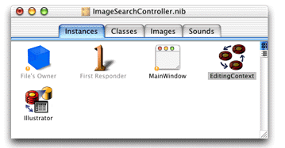
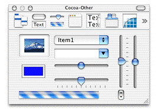
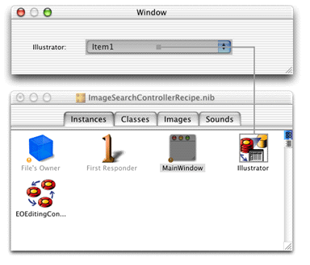
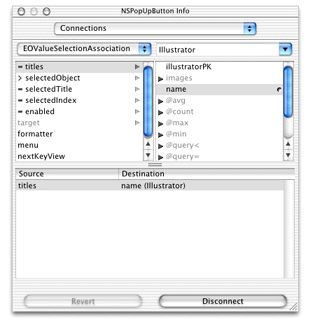
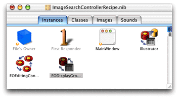
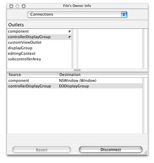
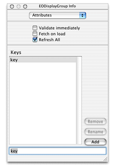
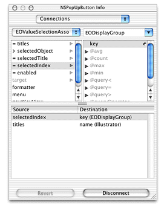
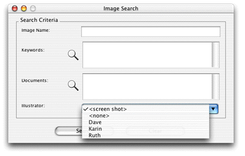

It's common to want to
display pop-up menus in interface files that display a short list
of enumeration values. This chapter describes how to connect a pop-up
menu widget (javax.swing.JComboBox)
to a display group and how to get the value of the selected object in
the interface file's controller class.
Problem: You want to display a pop-up menu (JComboBox) and extract the selected value.
Solution: Place a pop-up menu widget in an interface file and use a controller display group to extract the value.
In a nib file, add the entity that contains the enumeration values to the nib file by dragging the entity from EOModeler into the nib file window. Figure 19-1 shows an entity called "Illustrator" as a display group in a nib file.
Figure 19-1 Illustrator entity in nib file
When you drag an entity from EOModeler into a nib file, an EOEditingContext object is also added if one is not already in the nib file.
Now add a widget for the pop-up menu. You can find it in the Cocoa-Other palette, as shown in Figure 19-2. It's the widget that includes the text "Item1".
Figure 19-2 Cocoa-Other palette
Then, Control-drag from the widget to the display group for the entity containing the enumeration values, as shown in Figure 19-3.
Figure 19-3 Connect widget to display group
This action displays the Info window so you can set the binding
for the titles aspect
of the EOValueSelectionAssociation. As shown in Figure 19-4,
bind the titles aspect
to the attribute of the entity that represents the enumeration value, name in
the example shown here.
Figure 19-4 Bind the title aspect to the appropriate attribute
Save the nib and choose Test Interface from the File menu.
You should see the values of the attribute bound to the titles aspect
of the pop-up menu as items in that menu.
To get the value of the selected object in the controller class for the interface file, there is more work to do. Add a new EODisplayGroup object to the interface file by dragging one out from the EnterpriseObjects palette into the nib file window. The nib file window should then appear as shown in Figure 19-5.
Figure 19-5 EODisplayGroup object in nib file
Then, bind the new EODisplayGroup object to the controllerDisplayGroup outlet
of File's Owner. Do this by Control-dragging from File's Owner
to the new display group as shown in Figure 19-6.
Figure
19-6 Bind File's Owner's controllerDisplayGroup outlet
Then, in the Info window, select controllerDisplayGroup and
click Connect, as shown in Figure 19-7.
Figure 19-7 Bind the outlet
Now, add a key to the controller display group object called "key". This represents the name of the action method that is invoked in the nib file's controller class when a user chooses an object in the pop-up menu. To add a key, select the display group object in the nib file window and choose Show Info from the Tools menu. In the Attributes pane, add the key named "key" as shown in Figure 19-8.
Figure 19-8 Add a key to display group
Then, bind the selectedIndex attribute
of the EOValueSelectionAssociation to the key named "key" in
the controller display group. Control-drag from the pop-up menu
to the display group bound to the controllerDisplayGroup outlet
of File's Owner and in the Info window, connect the binding as
shown in Figure 19-9.
Figure 19-9 Bind selectedIndex attribute of association to display group key
Save the nib file.
In the nib file's controller class, add a method called setKey.
This is invoked when an object in the pop-up menu is selected.
public void setKey(int illustrator) {
_illustrator =
(String)controllerDisplayGroup().valueForObjectAtIndex(illustrator, "name");
}
It sets an instance variable in the class (_illustrator)
to the String value of the object selected in the menu.
Figure 19-10 shows a pop-up menu in action.
Figure 19-10 A pop-up menu in action
